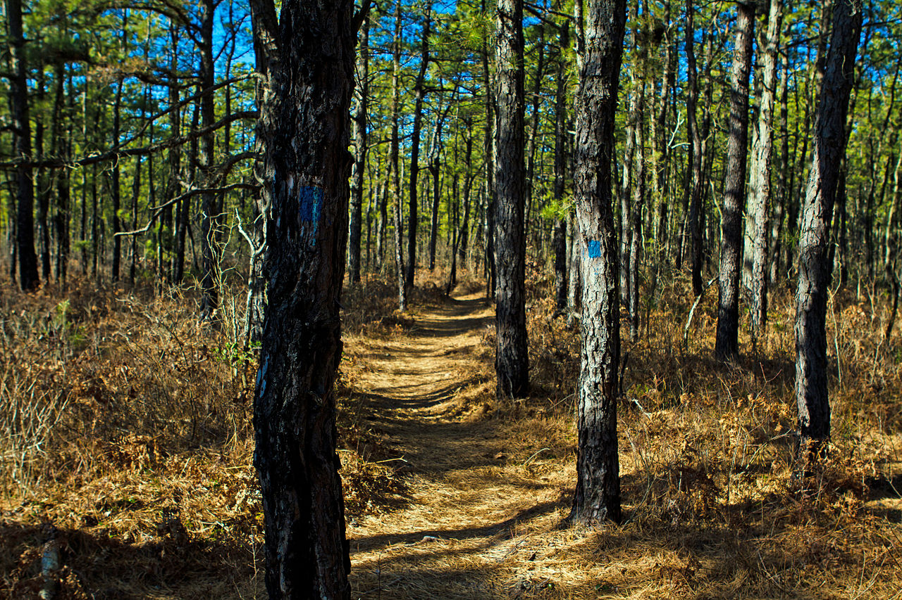

Sils sastopams smilšainās, ļoti nabadzīgās, sausās podzolaugsnēs. Tajā aug vidēji garas priedes. Šis ir augu sugām visnabadzīgākais mežu tips. Pameža nav, retumis aug kadiķi vai nelielas eglītes. Zemsedzi veido ķērpji, sūnas, virši, brūklenāji un miltenāji. Sils ir gaisīgs un skrajs mežs.

Avots: lv.wikipedia.org